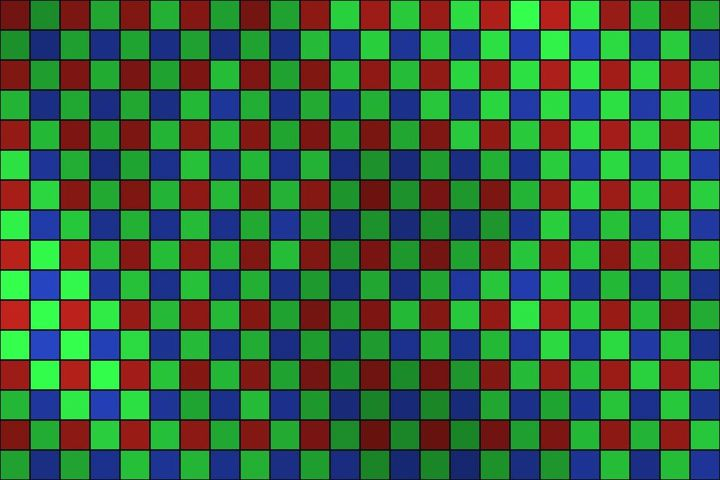
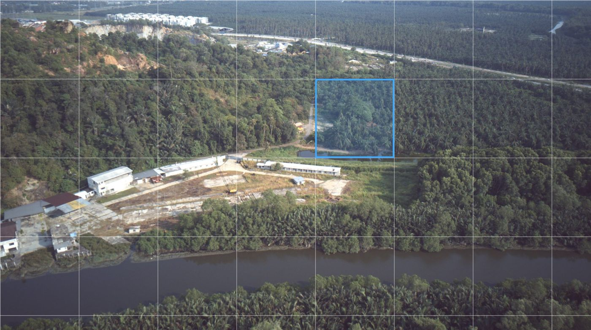

Lossless imaging · auditable decoder
Every pixel back, exactly, from a decoder small enough to read.
100on100 stores raw sensor images without losing a bit. Its decoder is one program of 94,336 octets. It gives the same pixels on every machine we have tested, and refuses a damaged or hostile file with a numbered reason instead of guessing.

Keep every raw frame, and prove it arrived intact
Lossless sensor data over narrow links, decoded identically anywhere.
More → Medical devicesA decoder that refuses, not guesses
Malformed files turned away with a numbered reason.
More → EvidenceMeasured, not claimed
Every figure with the section that records it, and our losses too.
More →How it works
Built from rules, not trained on data
100on100 describes an image as a sequence of tokens drawn from a fixed model that is generated by rule. Each small block of samples is predicted by one rule from a set enumerated by rule, never fitted to anyone's images. There are no trained tables and no weights, so nothing in the format depends on a training set. The same rules gave the same tokens on every machine we have tested, and the decoder only has to follow them back.
100on100
We make every image provable
An image is worth keeping only if you can trust what comes back out. 100on100 is a lossless image format and a decoder small enough for your own team to review. Decoding uses integers only, so there is no floating-point rounding for machines to disagree on. In our test sets, every damaged or hostile file was either decoded exactly or refused by number.
Real sensor data
Measured on raw frames from 67 cameras
Drones, phones, action cameras and medium-format backs: one raw file per camera model, 1.22 billion samples, every one decoded back and compared bit for bit. These are the frames behind our compression figures.
See the figures →
Solutions
Where an exact image matters

Defence and edge sensing
Raw sensor frames kept exactly, moved over narrow links, decoded on any machine, with proof that nothing changed on the way.
More →Space and Earth observation
Raw sensor samples kept exactly over narrow downlinks, a damaged tile refused by number while the rest of the frame still decodes, and one result on every ground machine.
More →Medical devices
A decoder inside your device that refuses a malformed study instead of showing a wrong image, and gives every viewer the same pixels.
More →Long-term archives
Files that carry their own decoder, so an image stored today can still be read when the software that wrote it is gone.
More →Proof
Measured, not claimed
Every figure comes from the codec's own records and can be checked by your engineers.
octets: the entire decoder, for format versions 1 to 4
decoded result on x86-64, ARM, RISC-V and WebAssembly for a test stream
hard and hostile files decoded exactly or refused by number
files where the C99 decoder matched the reference byte for byte
Details on the evidence page. Test records are available to evaluators under NDA.
Why now
Image decoders are being exploited in the wild
An image arrives from outside, and the decoder is the first code that touches it. Both of these are in the US government's catalogue of exploited vulnerabilities.
“Google Chromium WebP contains a heap-based buffer overflow vulnerability that allows a remote attacker to perform an out-of-bounds memory write via a crafted HTML page. This vulnerability can affect applications that use the WebP Codec.”CISA Known Exploited Vulnerabilities, added 2023-09-13. Google, 2023-09-11: “an exploit for CVE-2023-4863 exists in the wild.”
“Apple iOS, iPadOS, and macOS contain an out-of-bounds write vulnerability in the Image I/O framework.”CISA Known Exploited Vulnerabilities, added 2025-08-21. Apple: “may have been exploited in an extremely sophisticated attack.” Quarkslab traced it to lossless JPEG data inside DNG raw camera files, the same class of data 100on100 stores.
Briefing and demonstration
Come and see for yourself
We show 100on100 on your own data, at your site or in a remote session: the decoder, the refusals, the matching results, and where other codecs are smaller.
Request a briefing